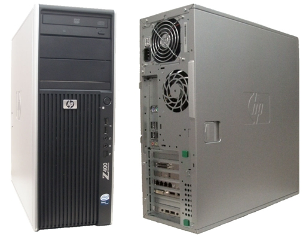
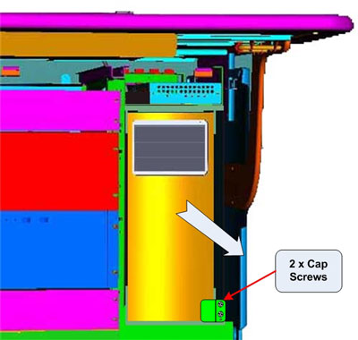
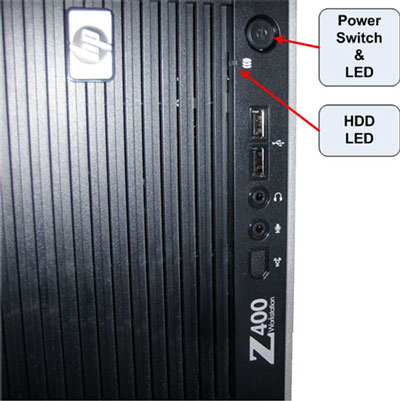

Operating Documentation
Direction 5193574-800, Rev# 22
LightSpeed 7.X Service Methods
Module Version 2.0, Version Date 8/17/10
Operating Documentation |
| Required Persons | Preliminary Reqs | Procedure | Finalization |
|---|---|---|---|
| 1 | 180 mins | 30 mins |
This procedure describes and illustrates the steps necessary to replace the Host Computer.
| Last revised: | 2-June-2010 |
Illustration 1: GOC6.5 Host Computer (HP Z400)

| Item | Qty | Effectivity | Part# | Manufacturer | |
|---|---|---|---|---|---|
| Standard FE Toolkit | 1 | - | - | - | |
| Item | Qty | Effectivity | Part# | Manufacturer | |
|---|---|---|---|---|---|
| VCT Host Computer (HP Z400) | 1 | - | 5800000 | - | |
| ||||
| ELECTROCUTION HAZARD | ||||
| HIGH VOLTAGE PRESENT | ||||
| USE PROPER LOCKOUT / TAGOUT PROCEDURES BEFORE REPLACING THE COMPONENTS. |
| ||||
| POTENTIAL FOR INJURY TO SERVICE PERSONNEL | ||||
| HOST COMPUTER CHASSIS CAN WEIGH IN EXCESS OF 30 POUNDS. | ||||
| DEPENDING ON YOUR HEIGHT AND ACCESS TO EQUIPMENT REMOVAL/INSTALLATION, LIFTING ASSISTANCE MAY BE REQUIRED. USE YOUR JUDGMENT TO DETERMINE IF LIFT ASSIST OR A SECOND PERSON MAY BE REQUIRED TO ASSIST IN REMOVAL AND INSTALLATION. |
| ||||
| FOLLOW ALL REQUIRED SAFETY AND PPE PROCEDURES CUSTOMARY FOR YOUR ORGANIZATION WHEN WORKING ON THIS PRODUCT. | ||||
| Condition | Reference | Effectivity |
|---|---|---|
Access to both the front and rear of the Operator Console is required. Move the console away from walls and remove obstacles in room. | - | - |
Only trained service personnel should service the GE CT Scanner. | - | - |
Select one of the following methods to power off the Operator Console:
If applications are running, click the Shut Down icon and select Shut Down.
If applications are down, open a Unix Shell using the Toolchest. Type: {ctuser@hostname} halt. Press <Enter>.
The Operator Console monitor will display a ‘System Halted’ message when it is acceptable to power off the Operator Console.
Power OFF the Operator Console at the front panel switch (Illustration 2).
Illustration 2: Console Power Switch

Perform the prescribed Lockout/Tagout procedure. For added protection, disconnect the Twist-N-Lock Main Power Cable from rear of console.
Remove the Front and Rear Operator Console Covers per the prescribed cover removal procedure..
Remove the cable connections to the Host Computer chassis being replaced.
| NOTE: | Verify that all cables are labeled and clearly marked. If necessary, add a label for clarity |
Remove the power cord at the rear of the Host Computer chassis
Loosen the two (2) cap screws (Illustration 3) on the retaining bracket at the lower right front of the Host Computer chassis, which holds the Host Computer in place in the Operator Console right side compartment.
Illustration 3: Host Computer Mounting

Pivot the Retaining Bracket away from the Host Computer chassis. See Illustration 4
Illustration 4: Host Computer Retaining Bracket

Slide the Host Computer chassis forward (out the front of console) and set aside.
| NOTE: | It will be necessary to push the Host Computer from the
rear of the console. Push the Host Computer out far enough to allow
for hand gripping of the chassis, since there are no handles on the
Z400 Host Computer. From the front of the console, pull the Host Computer
the rest of the way out. The Host Computer is held in place by close tolerances of the mounting brackets. The Host Computer fits tightly in its brackets. |
Follow the Host Computer NIC Exchange - HP Z400 procedure. Then return to these instructions.
| NOTE: | The System Option Licenses are tied to Host Computer’s Ethernet (eth0) MAC address. The NIC card can be exchanged if one is reasonably certain that the Host Computer failure is not related to the NIC card. This will allow for the reuse of System Option Licenses, otherwise new Licenses must be obtained. |
Slide the replacement Host Computer into the Operator Console from the front.
| NOTE: | The Host Computer is held in place by close tolerances of the mounting brackets. The Host Computer fits tightly in its brackets. Slide the Host Computer fully into the console until it come in contact with the bracket stops at the rear of the lower mounting bracket. Pivot the retaining bracket back into place. |
Hand tighten the two (2) cap screws on the retaining bracket to secure the Host Computer chassis to the Operator Console right side compartment.
Mount the power cord to the rear of the Host Computer chassis.
Replace the rear cable connections.
Illustration 5: HP Z400 Host Computer Connections

| Connection | Description - GOC6.5 HP Z400 Host Computer |
| 1 | Motherboard PS/2 - Not Used |
| 2 | Motherboard PS/2 - Mouse * |
| 3 | Motherboard USB - USB Keyboard |
| 4 | Motherboard USB - USB Mouse |
| 5 | Motherboard USB - USB Trackball |
| 6 | Motherboard USB - External Hard Drive |
| 7 | Motherboard USB - USB Peripheral Tower DVD-RW |
| 8 | Motherboard USB - USB Peripheral Tower DVD-RAM |
| 9 | Motherboard GbE Ethernert (eth4) - CNS Port 9 |
| 10 | Not Used |
| 11 | Audio Out - ICOM |
| 12 | Audio In - ICOM |
| 13 | Expansion Card GbE Ethernet (eth0) Port C - CNS Port1 |
| 14 | Expansion Card GbE Ethernet (eth1) Port D - TGP |
| 15 | Expansion Card GbE Ethernet (eth2) Port A - Hospital Network |
| 16 | Expansion Card GbE Ethernet (eth3) Port B - NOT USED |
| 17 | Not Used |
| 18 | Display Port 1 - Scan Monitor |
| 19 | DVI DUAL LINK - Display Monitor |
| 20 | Expansion Bulkhead USB - Barcode Reader |
| 21 | Expansion Bulkhead USB - Service Key |
| 22 | SCSI 1 - MOD Drive (Optional) |
| 23 | SCSI 2 - DASM (Optional) |
| * GOC6.5 Consoles may use PS/2 Mouse | |
For cabling details, refer to the appropriate interconnect located in the System Diagrams folder of this service methods publication.
Reconnect the Twist-N-Lock Main Power Cable from rear of console and remove Lockout Tagout protection applied earlier.
Power ON the Operator Console at the console’s front panel switch.
Visually verify the Host Computer front panel Power LED is illuminated. If not, press the Host Computer’s front panel power switch to apply power to the Host Computer.
Illustration 6: HP Z400 Host Computer Power Switch

Verify that the Host Computer has powered up and is not displaying or sounding any POST Errors.
| NOTE: | See Host Computer Troubleshooting if any errors appear. |
In order to assure proper operation of the Host computer it is necessary to perform software Load from Cold (LFC). Refer to the Software Chapter of this manual for software loading procedures.
After completing the software LFC, make certain that you perform a final Save System State.
After completing the LFC procedure, perform a complete shutdown of the Operator Console and restart the system.
Refer to System Scanning Tests in the Functional Checks chapter of this manual to confirm proper operation.
Reinstall Console Front and Rear Covers.